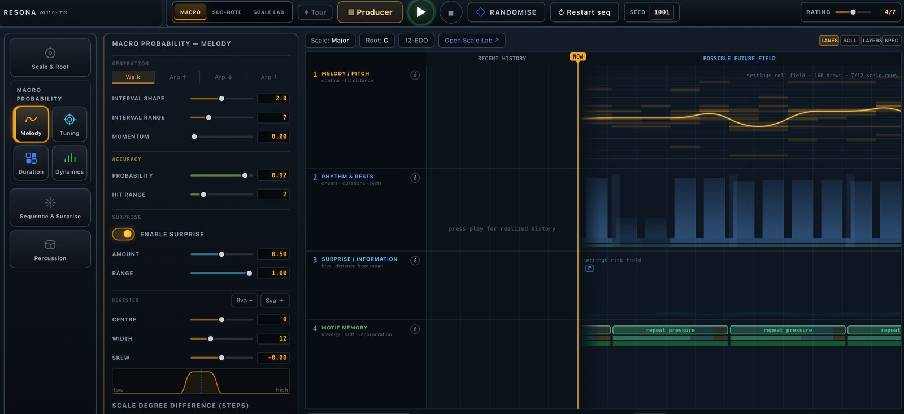
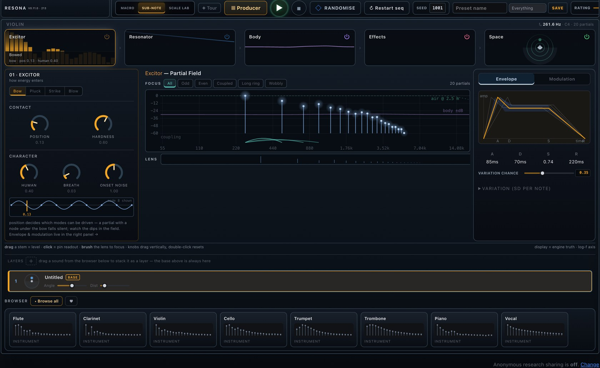
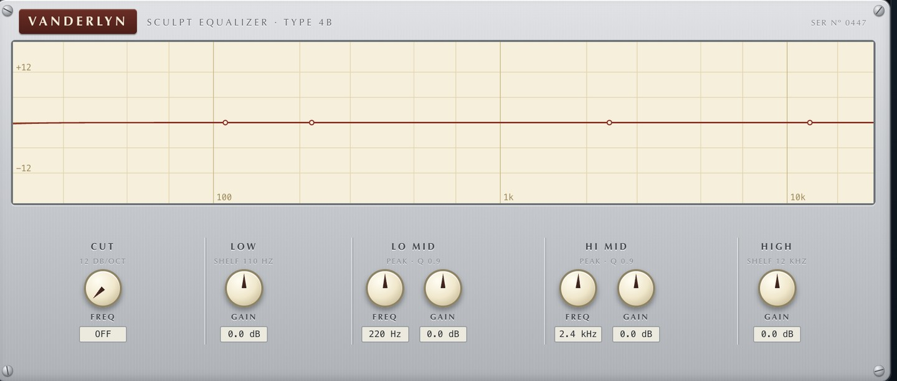
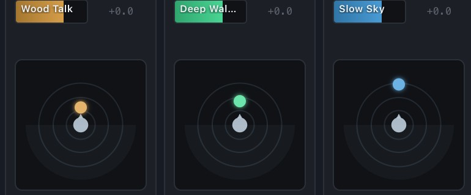

Marcus Anderson
Research notes, papers, software, and archived music work.
Research
-
Musical Repetition as Vocal Self-Simulation
A mechanistic theory arguing that precise repetition of affective vocalisation is the core process that turns sound into musical experience. -
Inverse-Square Distance Priors Improve Network Pruning at Extreme Sparsity
Tests a biologically inspired 1/d^2 wiring prior for sparse neural networks, showing improved ResNet-18 performance at 98-99% sparsity. -
Bandwidth and Capacity Systematically Shape the Topology of Inverse-Square Distance Pruning
Characterizes how inverse-square pruning changes network topology across input resolution and model size, highlighting bandwidth-dependent clustering and stronger 2D embeddings.
Software
Resona — a probabilistic, physically-modelled music studio and research instrument
A full browser-based music studio, designed and built end-to-end. It generates music from weighted probability distributions across several musical timescales, renders it through a physical-modelling synthesis engine, and arranges it on a multitrack producer timeline — while doubling as a reproducible instrument for researching why music sounds good.

- Generative core — melody, rhythm, register, articulation and surprise are all driven by editable probability distributions, with motif memory that repeats, drifts and mutates into a growing repertoire.
- Physical-modelling synthesis — every note is built from an excitor → resonator → body → effects → space chain: additive and formant voices, inharmonicity, material damping, vibrato and per-note envelopes rather than samples.
- Per-layer effects rack — eleven skeuomorphic, plugin-style effects across EQ, drive, modulation, delay and character, each with its own DSP, presets and expand-to-overlay face.
- Binaural spatialisation — position each source around the listener with a head / room / air model fitted from measured KEMAR HRTFs, with per-track motion through time.
- Microtonal Scale Lab — N-EDO systems, world tunings, per-degree cents, sub-scales and roots, with Scala import / export.
- Producer / DAW — arrange instruments on a multitrack timeline with seed-reproducible takes, a bake-to-piano-roll note editor, a channel-strip mixer, and offline WAV mixdown.
- Research-ready — every play, rating and edit is reproducible from a seed and can be logged (opt-in only) with expectation / surprise metrics, so appeal can be modelled directly against the mechanisms that generated the music.




Archive
-
Music Composition, 2018-2022
Archived composition, scores, recordings, and selected credits.